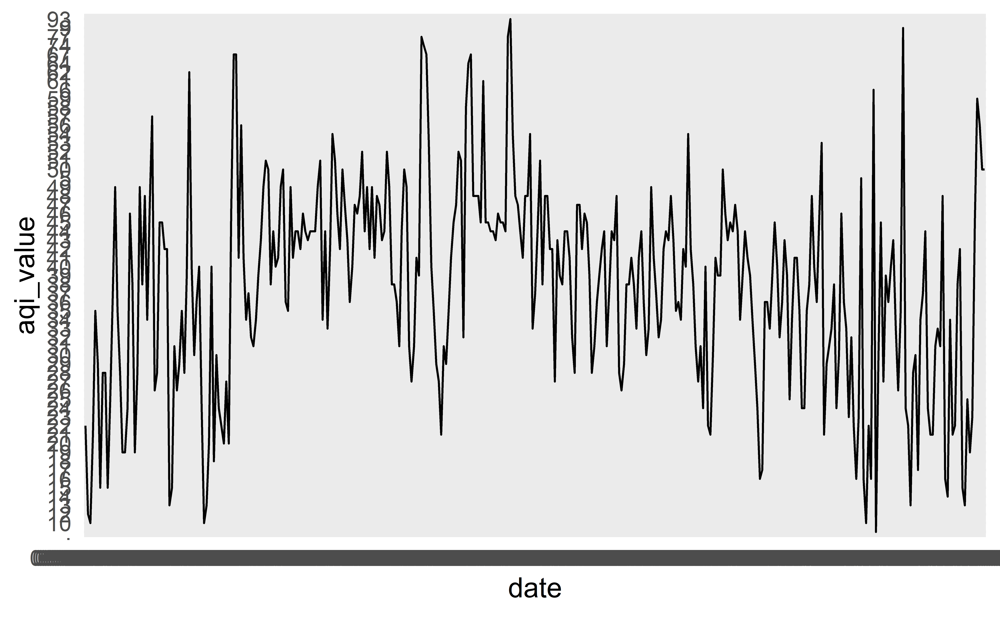
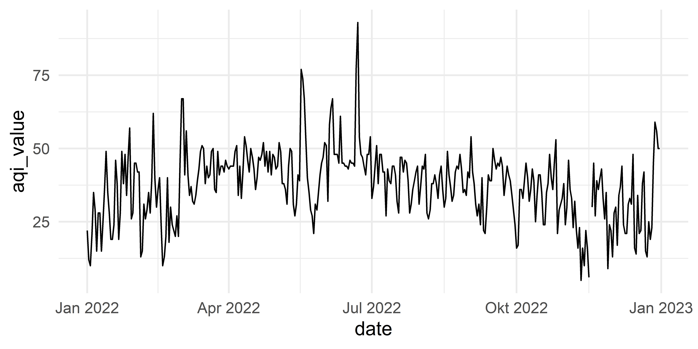
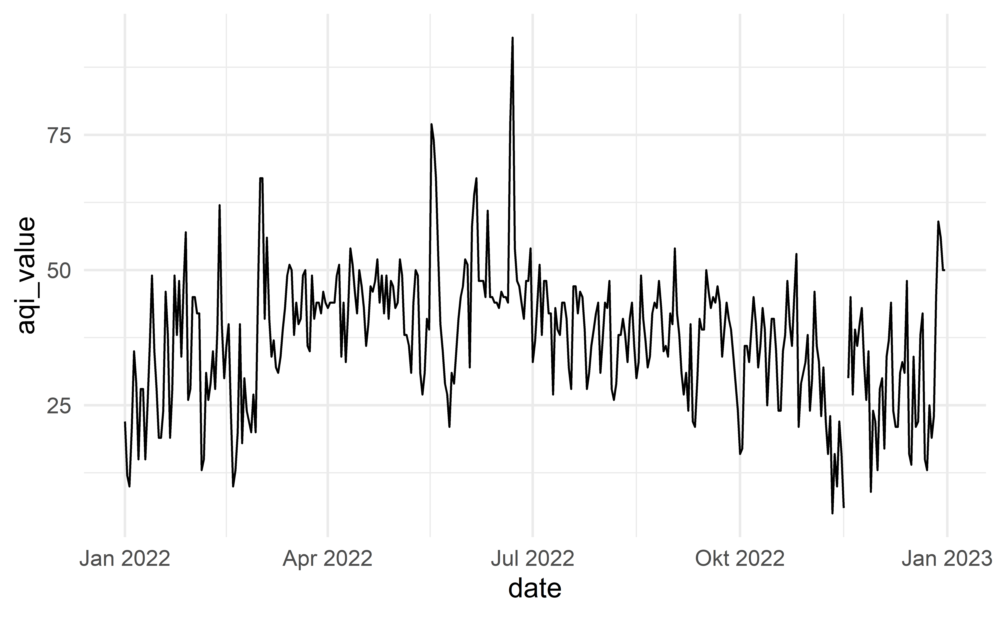

# load packages
library(countdown)
library(tidyverse)
library(lubridate)
library(janitor)
library(colorspace)
library(broom)
library(fs)
# set theme for ggplot2
ggplot2::theme_set(ggplot2::theme_minimal(base_size = 14))
# set width of code output
options(width = 65)
# set figure parameters for knitr
knitr::opts_chunk$set(
fig.width = 7, # 7" width
fig.asp = 0.618, # the golden ratio
fig.retina = 3, # dpi multiplier for displaying HTML output on retina
fig.align = "center", # center align figures
dpi = 300 # higher dpi, sharper image
)Visualizing time series data I
Lecture 8
Warm up
Announcements
Project 1 proposal due Friday, 5pm
RQ 3 due Tuesday by class, covers everything since last reading quiz
Project 1 presentations – Feb 22 in lab, all team members must be there
Setup
Working with dates
Air Quality Index
The AQI is the Environmental Protection Agency’s index for reporting air quality
Higher values of AQI indicate worse air quality

Source: https://www.airnow.gov/aqi-basics
AQI levels
The previous graphic in tibble form, to be used later…
aqi_levels <- tribble(
~aqi_min, ~aqi_max, ~color, ~level,
0, 50, "#D8EEDA", "Good",
51, 100, "#F1E7D4", "Moderate",
101, 150, "#F8E4D8", "Unhealthy for sensitive groups",
151, 200, "#FEE2E1", "Unhealthy",
201, 300, "#F4E3F7", "Very unhealthy",
301, 400, "#F9D0D4", "Hazardous"
)AQI data
Source: EPA’s Daily Air Quality Tracker
2016 - 2022 AQI (Ozone and PM2.5 combined) for Durham-Chapel Hill, NC core-based statistical area (CBSA), one file per year
2016 - 2022 AQI (Ozone and PM2.5 combined) for San Francisco-Oakland-Hayward, CA CBSA, one file per year
2022 Durham-Chapel Hill
- Load data
dch_2022 <- read_csv(here::here("data/durham-chapel-hill/ad_aqi_tracker_data-2022.csv"))- Metadata
dim(dch_2022)[1] 365 11names(dch_2022) [1] "Date" "AQI Value"
[3] "Main Pollutant" "Site Name"
[5] "Site ID" "Source"
[7] "20-year High (2000-2019)" "20-year Low (2000-2019)"
[9] "5-year Average (2015-2019)" "Date of 20-year High"
[11] "Date of 20-year Low" Clean variable names
dch_2022 <- dch_2022 |>
janitor::clean_names()
names(dch_2022) [1] "date" "aqi_value"
[3] "main_pollutant" "site_name"
[5] "site_id" "source"
[7] "x20_year_high_2000_2019" "x20_year_low_2000_2019"
[9] "x5_year_average_2015_2019" "date_of_20_year_high"
[11] "date_of_20_year_low" First look
This plot looks quite bizarre. What might be going on?
ggplot(dch_2022, aes(x = date, y = aqi_value, group = 1)) +
geom_line()
Peek at data
dch_2022 |>
select(date, aqi_value, site_name, site_id)# A tibble: 365 × 4
date aqi_value site_name site_id
<chr> <chr> <chr> <chr>
1 01/01/2022 22 Durham Armory 37-063-0015
2 01/02/2022 12 Durham Armory 37-063-0015
3 01/03/2022 10 Durham Armory 37-063-0015
4 01/04/2022 21 Durham Armory 37-063-0015
5 01/05/2022 35 Durham Armory 37-063-0015
6 01/06/2022 29 Durham Armory 37-063-0015
7 01/07/2022 15 Durham Armory 37-063-0015
8 01/08/2022 28 Durham Armory 37-063-0015
9 01/09/2022 28 Durham Armory 37-063-0015
10 01/10/2022 15 Durham Armory 37-063-0015
# … with 355 more rowsTransforming date
Using lubridate::mdy():
dch_2022 |>
mutate(date = mdy(date))# A tibble: 365 × 11
date aqi_value main_pol…¹ site_…² site_id source x20_y…³
<date> <chr> <chr> <chr> <chr> <chr> <dbl>
1 2022-01-01 22 PM2.5 Durham… 37-063… AQS 111
2 2022-01-02 12 PM2.5 Durham… 37-063… AQS 76
3 2022-01-03 10 PM2.5 Durham… 37-063… AQS 66
4 2022-01-04 21 PM2.5 Durham… 37-063… AQS 61
5 2022-01-05 35 PM2.5 Durham… 37-063… AQS 83
6 2022-01-06 29 PM2.5 Durham… 37-063… AQS 71
7 2022-01-07 15 PM2.5 Durham… 37-063… AQS 75
8 2022-01-08 28 PM2.5 Durham… 37-063… AQS 76
9 2022-01-09 28 PM2.5 Durham… 37-063… AQS 57
10 2022-01-10 15 PM2.5 Durham… 37-063… AQS 71
# … with 355 more rows, 4 more variables:
# x20_year_low_2000_2019 <dbl>,
# x5_year_average_2015_2019 <dbl>, date_of_20_year_high <chr>,
# date_of_20_year_low <chr>, and abbreviated variable names
# ¹main_pollutant, ²site_name, ³x20_year_high_2000_2019Transforming AQI values
What does this warning mean?
dch_2022 |>
mutate(aqi_value = as.numeric(aqi_value))Warning in mask$eval_all_mutate(quo): NAs durch Umwandlung
erzeugt# A tibble: 365 × 11
date aqi_v…¹ main_…² site_…³ site_id source x20_y…⁴ x20_y…⁵
<chr> <dbl> <chr> <chr> <chr> <chr> <dbl> <dbl>
1 01/01/2… 22 PM2.5 Durham… 37-063… AQS 111 10
2 01/02/2… 12 PM2.5 Durham… 37-063… AQS 76 8
3 01/03/2… 10 PM2.5 Durham… 37-063… AQS 66 14
# … with 362 more rows, 3 more variables:
# x5_year_average_2015_2019 <dbl>, date_of_20_year_high <chr>,
# date_of_20_year_low <chr>, and abbreviated variable names
# ¹aqi_value, ²main_pollutant, ³site_name,
# ⁴x20_year_high_2000_2019, ⁵x20_year_low_2000_2019Investigating AQI values
- Take a peek at distinct values of AQI
dch_2022 |>
distinct(aqi_value) |>
pull() [1] "22" "12" "10" "21" "35" "29" "15" "28" "25" "36" "49" "19"
[13] "24" "46" "38" "48" "34" "47" "57" "26" "45" "42" "13" "31"
[25] "39" "62" "40" "30" "20" "18" "27" "67" "41" "56" "37" "32"
[37] "43" "51" "50" "44" "33" "54" "52" "77" "74" "53" "58" "64"
[49] "61" "93" "16" "17" "23" "5" "6" "." "9" "14" "59""."likely indicatesNA, and it’s causing the entire column to be read in as characters
Rewind, and start over
dch_2022 <- read_csv(
here::here("data/durham-chapel-hill/ad_aqi_tracker_data-2022.csv"),
na = c(".", "")
)glimpse(dch_2022)Rows: 365
Columns: 11
$ Date <chr> "01/01/2022", "01/02/2022"…
$ `AQI Value` <dbl> 22, 12, 10, 21, 35, 29, 15…
$ `Main Pollutant` <chr> "PM2.5", "PM2.5", "PM2.5",…
$ `Site Name` <chr> "Durham Armory", "Durham A…
$ `Site ID` <chr> "37-063-0015", "37-063-001…
$ Source <chr> "AQS", "AQS", "AQS", "AQS"…
$ `20-year High (2000-2019)` <dbl> 111, 76, 66, 61, 83, 71, 7…
$ `20-year Low (2000-2019)` <dbl> 10, 8, 14, 9, 8, 15, 18, 1…
$ `5-year Average (2015-2019)` <dbl> 39.2, 36.8, 38.2, 30.4, 26…
$ `Date of 20-year High` <chr> "01/01/2000", "01/02/2005"…
$ `Date of 20-year Low` <chr> "01/01/2007", "01/02/2012"…Data cleaning
dch_2022 <- dch_2022 |>
janitor::clean_names() |>
mutate(date = mdy(date))
dch_2022# A tibble: 365 × 11
date aqi_value main_pol…¹ site_…² site_id source x20_y…³
<date> <dbl> <chr> <chr> <chr> <chr> <dbl>
1 2022-01-01 22 PM2.5 Durham… 37-063… AQS 111
2 2022-01-02 12 PM2.5 Durham… 37-063… AQS 76
3 2022-01-03 10 PM2.5 Durham… 37-063… AQS 66
4 2022-01-04 21 PM2.5 Durham… 37-063… AQS 61
5 2022-01-05 35 PM2.5 Durham… 37-063… AQS 83
6 2022-01-06 29 PM2.5 Durham… 37-063… AQS 71
7 2022-01-07 15 PM2.5 Durham… 37-063… AQS 75
8 2022-01-08 28 PM2.5 Durham… 37-063… AQS 76
9 2022-01-09 28 PM2.5 Durham… 37-063… AQS 57
10 2022-01-10 15 PM2.5 Durham… 37-063… AQS 71
# … with 355 more rows, 4 more variables:
# x20_year_low_2000_2019 <dbl>,
# x5_year_average_2015_2019 <dbl>, date_of_20_year_high <chr>,
# date_of_20_year_low <chr>, and abbreviated variable names
# ¹main_pollutant, ²site_name, ³x20_year_high_2000_2019Another look
ggplot(dch_2022, aes(x = date, y = aqi_value, group = 1)) +
geom_line()
How would you improve this visualization?

Visualizing Durham AQI
Recreate the following visualization.